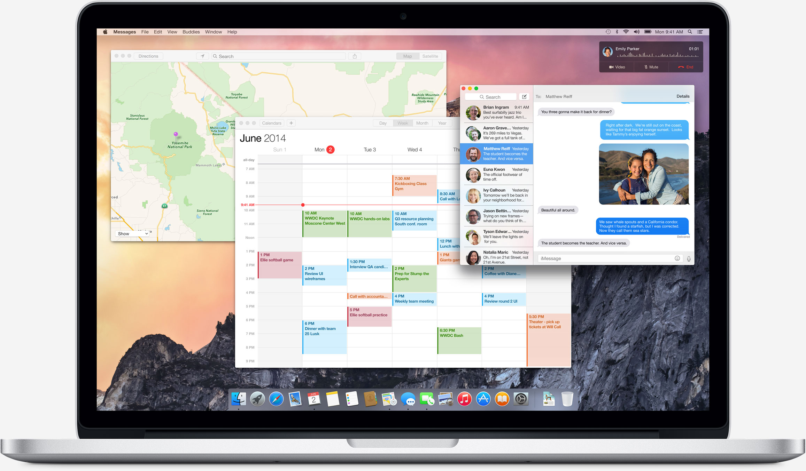

OSX 10.10 Yosemite: More iOS for the Desktop
Apple continues to transform OSX into its next era with drastic overhauls both visually and feature-wise. This review will cover some of the major features that have impacted my usage of OSX thus far during beta testing as well as areas that can be improved for next year's California-themed release, OSX 10.10 (Yosemite).
Design:
The implementation of transparency, which Apple calls Vibrancy, across all windows attempts to accomplish what Windows Vista first introduced with the Aero transparency. However, Apple goes a step further with the use of iOS "frost" by adding it to every menu and sidebar across all applications giving it a very cool effect.
Biggest area of concern is that Vibrancy is appears quite graphics intensive for even simple tasks like swiping between desktops, which is causing noticeable lag experienced on my very capable 2014 MacBook Pro. The lag is slightly less in Beta 3 compared to Beta 2, but still noticeably present. Users on older machines will probably see their machines struggle to keep up with the graphics refresh rates. Knowing this, Apple took precautions to add a handy option to disable Vibrancy, located in System Preferences>Accessibility>Reduce Transparency. This toggle is also very useful when away from the desk and attempting to maximize battery life. Once transparency is turned off, everything that was previously frosty now defaults to a shade of solid white-gray, while the notification sidebar defaults to solid black. I really hope that Apple can fix the lag issue in final release as I would love to keep this aesthetically pleasing feature turned on.
Apple also made another giant leap in fully abandoning skeuomorphism, the concept of having visual design mimicking the looks of the real-life object. For example, the Notes app would resemble the actual notepad with yellow pages, blue lines, and black binding at the top. Those that appreciate this design argue that this gives a sense of realism. However, critics of skeuomorphism argue the design makes application appear too busy, taking attention focus away from its actual use. The replacement is a flat simple design, much like what we have already seen in iOS 7 and 8. Gradients and textures are less harsh by incorporating the flat design trend we have seen over the past couple of years.
Dock:
Apple decided to retire the 3D icons-sitting-on-a-glass design and resurrect the default older flat box from OSX 10.4 (Tiger). This box has always been a hidden feature in recent releases that could be manually turned on, but never saw the need to. Without all the 3D aspects of the docks, the dock does look more pleasant. Much like the Windows taskbar, it appears to take the most prominent color of the desktop wallpaper and make it slightly darker to provide sufficient contrast for the icons to be clearly visible. Apple also opted for mostly circular icons with bright colors that resemble their iOS counter parts for their default Apple apps, like Safari, iTunes, Facetime, and App Store.
Safari:
I have always sworn by Google Chrome as my default browser, primarily for the handy Google sync features for keeping my bookmarks updated on the ever growing list of devices I own (Mac, PC, MotoX, Nexus 7) and the better support for useful extensions like autoscrolling and hover-to-zoom. The only downsides to using Chrome on a laptop is that is fairly resource intensive even for even the most basic use, which would translate to roughly a 1-2 hour decrease in battery life. Considering I had been getting close 6 hours or more battery life most of the time, it was a sacrifice I was more than willing to make for the sake of convenience and familiarity.
However, Safari 8 received a massive visual upgrade that made it more appealing to use thanks to the flatter UI design. The tab bar got two major changes. First, the way the current tab is now a simple highlight that is contrasted from the other tabs, which is less distracting to the way it was in previous versions. Second, tab overflow now prevents your tabs from shrinking excessively to the point you cannot even read the tab names. Instead, it allows you to scroll through the tabs by using left-right gestures on the trackpad while the mouse is hovered over the tab bar. Speaking of gestures, Apple continues to excel in providing intuitive gestures to make browsing as easy as possible and to minimize the need move the mouse for basic tasks, like page back/forward.
Tab overview is also improved by now intelligently grouping similar webpages into stacks, allowing for better management of the ever increasing number of open tabs. Another handy addition is an easy shortcut added right next to the back/forward buttons to open the sidebar containing bookmark and reading list. The sidebar once again brings the beautiful transparency effects into view.
A major gripe is the lack of favicons makes it harder for me to identify a particular tab or bookmark rather than reading the title of each. Another is the inability to reopen more than one recently closed tab. Cmd+Z command will undo the most recent close tab, but if you accidently close more than one, then you are out of luck. Only way to retrieve that tab is dig into the browser history and find the page.
Sadly, I do not see Apple fulfilling these longstanding feature requests anytime soon due to their obsession with maintaining a clean and simple UI design over useful functionality. Safari, in general, has always consistently lagged behind in implementing features that have been standardized in Chrome and Firefox for years. Kind of like delaying the addition of copy and paste until iOS 5 despite the apparent need for it in all previous versions. Nevertheless, the lightweight nature of the browser is what also allows for the excellent performance optimization and battery life efficiency that is unparalleled to any other browser for OSX, making it a browser that any Macbook user should incorporate into their workflow to some extent.
Notification Center:
When the notification center was first introduced in OSX 10.8 (Mountain Lion), there was certainly some initial excitement. Apple implemented a notification system that mimicks the functionality of the popular Growl app. Growl provides discrete popup notifications at the top right of the screen for various apps. The sidebar is based on the concept of having a space to hold notifications much like the notification bar on iOS/Android. In practicality, the sidebar is entirely useless and did not actually have much value to my workflow. If anything, the off chance when I did open the notification bar, it bothered me when notifications accumulated inside, triggering my OCD-like behavior to click the x's to clear them out. The only useful feature for some users is the ability to write social media status messages, such as for facebook and twitter, right from the sidebar. But, most users probably have a much more powerful twitter client running on the desktop or prefer to visit the website itself to post their updates and see their whole feed. Mavericks did not add anything useful worth mentioning other than a slight polish in the design of the sidebar.
Today View:
With Yosemite, Apple is finally realizing the fruits of its initial hard work. The notification bar now looks more like a dashboard replacement with the implementation of widgets for calendar, stocks, weather, and calculator. Apple took this a step further and allowed third party extensions can create their own widgets and allow users to add additional functionality to the sidebar. For example, the popular Airmail app recently added a widget to quickly view your inbox, todo, and memo right from the sidebar. Even though the old dashboard now has an option to disable it entirely, I still leave it on to use the post-it notes to write down quick comments.
Spotlight:
In previous releases, Spotlight would open from the top right corner and display as a dropdown menu. In Yosemite, it looks and functions very similar the popular app Alfred. A popup text field shows up at the center of the screen for maximum focus. As soon as you start typing, the search results are displayed and the most relevant suggestion is an autocomplete, similar to how the google search box works. To take things a step further, you can perform tasks like initiating a google search using contextual commands, similar to telling Siri to perform a task except you to type it out. This is still easier than opening safari and then typing out your search query when one step can suffice to achieve the same result. Spotlight usage overall is much more responsive and visually appealing over its predecessor, making it the most abused OSX feature in my daily workflow.
Dark mode:
All the late night Mac users will rejoice in having the ability to invert the status bar to black. The dock also turns to a shade of dark gray. Only problem is the status bar looks weird, possibly due to the lack of any texture or shadows. This is another area that I hope Apple does work on, and app developers also need to ensure their status bar icons cooperate with the color inversion.
Conclusion:
As mentioned earlier in this review, Apple tends to favor design over features, making it quite difficult to predict how specific implementations will be made. We already knew Apple was pushing the UI design more towards iOS 8, but there was major concern as to what extent they were going to merge the two. Thankfully, Apple found a good balance and I am very pleased with how Yosemite turned out. The addition of transparency and much improved Safari, Spotlight, and notifications center provide a sizable net benefit for users to look forward to.
For a more comprehensive review, consider reading Ars Technica's massive 25 page feature-by-feature breakdown of OSX Yosemite.